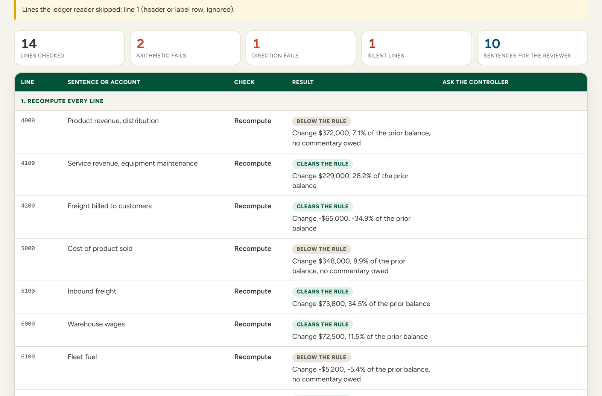
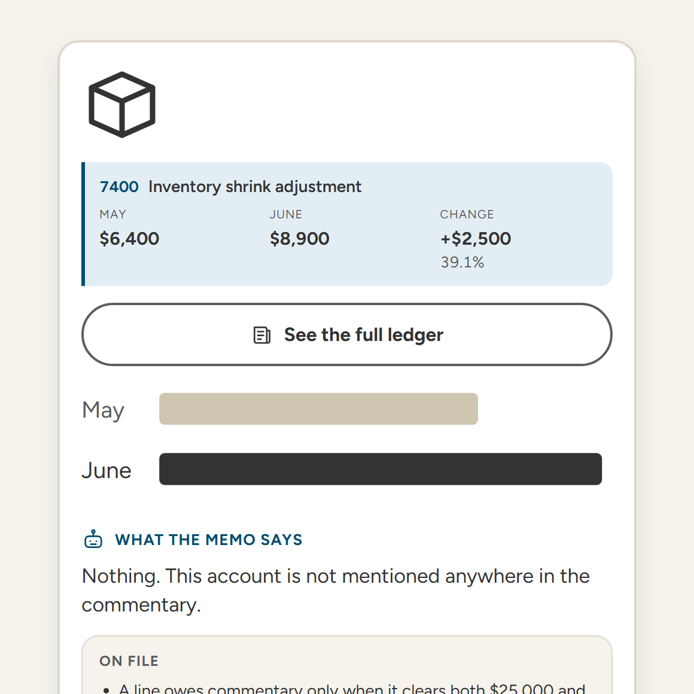
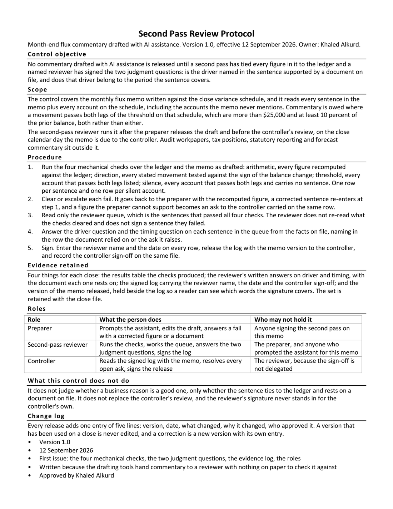
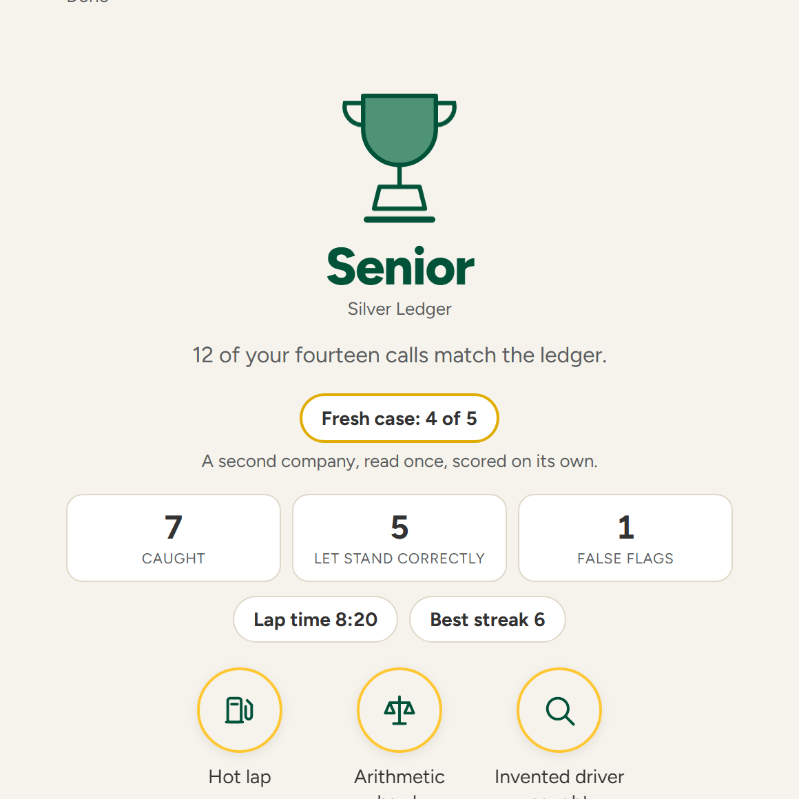

Khaled Alkurd. A checker, a protocol, an evidence log and a ten-minute drill for the review that comes after an AI assistant drafts the memo.
At PwC Deals this summer I read management's explanations of the variances and tested them against the ledger, and the ones that read best were not always the ones that tied. In the home services company my family runs I have watched the close memo get signed at the end of a long day. An AI assistant drafts those explanations now, and they read better than what a person writes on deadline.
The case in the drill is built, not captured. Halyard is a made-up company, and its June memo reads the way an AI assistant writes close commentary, with the mistakes they make planted line by line so they can be taught and scored.

Paste in the ledger and the memo, and four checks run in the browser: every figure recomputed, every direction tested against the sign, every account over the threshold that no sentence mentions.
Run the checker
Fourteen ledger lines from a made-up company, eight with a planted problem and six clean, each called against a key, and flagging all fourteen scores eight because a false flag costs what a miss costs.
Play the ten-minute drill
It fixes the scope and the threshold, puts the four checks ahead of the two questions only a person answers, and names who may sign.
Read the protocol (one page)
Every run records the call, the error type and the time under an organization code, and the repository holds the code and the records.
Code and pilot recordsObjective. No commentary drafted with AI assistance is released until a second pass ties every figure to the ledger and a named reviewer signs the two judgment questions.
The four mechanical checks. Recompute every figure, test every direction word against the sign, list every account clearing both legs of the threshold, and name the ones no sentence mentions.
The two signed questions. Is the driver named in the sentence supported by a document on file, and does that driver belong to the period the sentence covers.
Who may not review. The preparer, and anyone who prompted the assistant for this memo.
[Findings, updated when the response export is run: players by organization, catch rate by error type, false-flag rate, median lap time, fresh-case transfer rate]
The figures are computed from the response sheet by the script in the repository, one row per run.
Today it runs the four mechanical checks, holds the evidence log, trains the two judgment calls, and records the basis a player gives for every one of the nineteen calls.
It does not yet judge a driver or a timing claim, match an account loosely, or read Excel. Four questions the form still marks required are not asked, and the drill sends the string "not asked" rather than a value that would read as an answer.
Next is the Excel template, and the checks running on every AI memo before a reviewer reads it.
The two cases are versioned outside the page, as halyard-v3 and brightwater-v2, both dated 13 September 2026. The version travels with every response, and responses scored against different versions are never pooled.
Every sentence a card shows under On file is a verified case assumption. A document that is not listed was not supplied, which is not a claim that it does not exist, so an unsupported sentence is not established rather than false. A flag can be correct while the reason behind it is wrong, and the reveal says so.
How the case and its memo were made is written down in PROVENANCE.md, the case files and what changed in them are in cases/README.md, and a live drafting run against the same ledger is recorded separately in What a real AI draft got wrong.
Any ledger. The checker reads an account, a prior balance and a current balance, from any system.
Any AI tool. The protocol governs the memo, not the model that drafted it.
Any firm. The threshold is a setting, and the drill runs inside a chapter meeting.
Built by Khaled Alkurd. A drill for the AI-native accounting student.